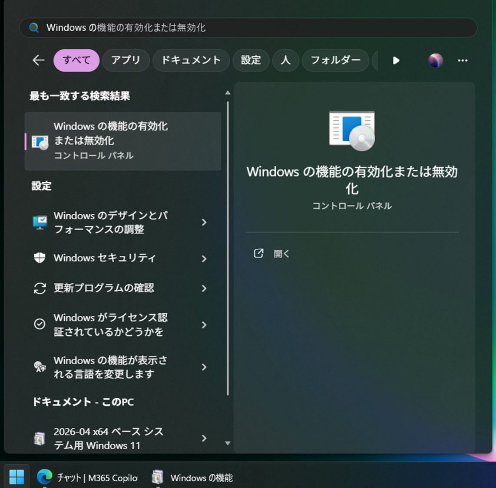
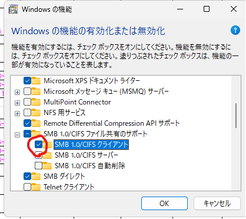

📌 この手順について：
社内ファイルサーバー
所要時間：約 5〜10分（再起動が必要な場合はもう少しかかります）
社内ファイルサーバー
nksv523 に接続するための初回セットアップ手順です。所要時間：約 5〜10分（再起動が必要な場合はもう少しかかります）
1
「Windowsの機能の有効化または無効化」を開く
スタートメニュー（画面左下の ⊞ Win ボタン）を開き、
検索欄に Windows␣の機能の有効化または無効化 と入力して選択します。
「Windows」のあとに半角スペースが必要です。全角スペースや詰めて入力すると検索にヒットしない場合があります。

2
SMB 1.0/CIFS クライアントを有効にする
「Windowsの機能」ウィンドウが開いたら、一覧から以下の項目を探してください。
SMB 1.0/CIFS ファイル共有のサポート
▶
SMB 1.0/CIFS クライアント
SMB 1.0/CIFS クライアント に チェック（✔）を入れて、
「OK」ボタンを押してインストールを開始します。

既にチェックが入っている場合は、この手順と次の手順3（再起動）はスキップしてください。
→ そのまま 手順4 へ進んでください。
→ そのまま 手順4 へ進んでください。
3
PCを再起動する 手順2でスキップの場合は不要
インストール完了後、画面の指示に従って PCを再起動 してください。
再起動しないと SMB 1.0 機能が有効になりません。
作業中のファイルがあれば、再起動前に必ず保存してください。
作業中のファイルがあれば、再起動前に必ず保存してください。
4
サーバーの資格情報を登録する
⊞ Win ＋ R キーを同時に押して「ファイル名を指定して実行」を開きます。
下記のコマンドを そのままコピー＆ペースト して「OK」を押してください。
▼ 入力するコマンド
cmd /c cmdkey /add:nksv523.ad.nkc.co.jp /user:nksv523.ad.nkc.co.jp\nksv523 /pass:nksv523
コマンドプロンプトが一瞬表示されてすぐ閉じますが、正常な動作です。
エラーが出なければ資格情報の登録は完了しています。
エラーが出なければ資格情報の登録は完了しています。
これでサーバーへの接続準備は完了です！
エクスプローラーのアドレスバーに
エクスプローラーのアドレスバーに
\\nksv523.ad.nkc.co.jp と入力すると接続できます。
🔧 トラブルシューティング
| 症状 | 対処法 |
|---|---|
| サーバーに接続できない | 手順2でSMB 1.0/CIFSクライアントが有効になっているか確認。 有効化した場合はPCの再起動を忘れずに。 |
| 「アクセスが拒否されました」と表示される | 手順4のコマンドを再度実行してください。 コピー時に余分なスペースが入っていないか確認。 |
| コマンドがエラーになる | コマンドの文字が途切れていないか確認してください。 全文を正しくコピーし直してください。 |